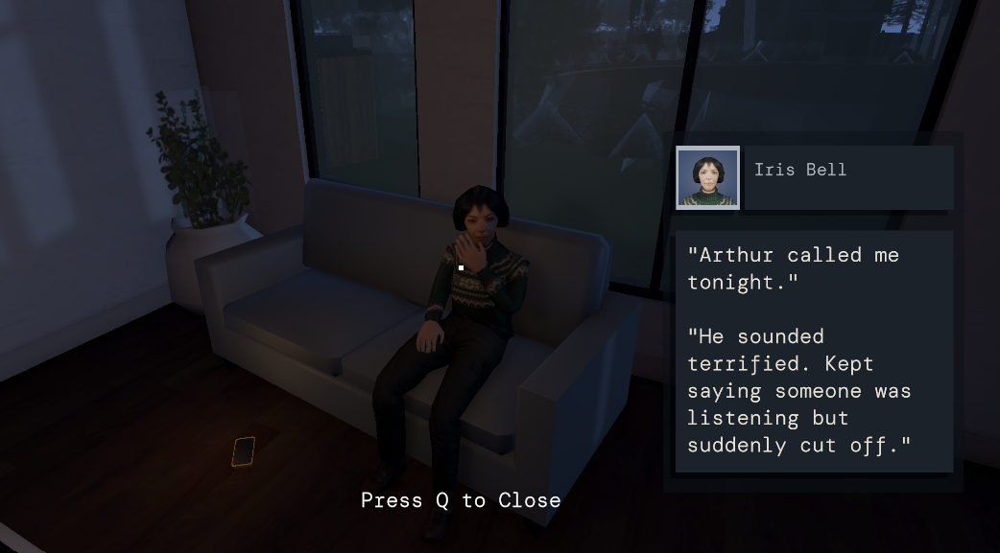
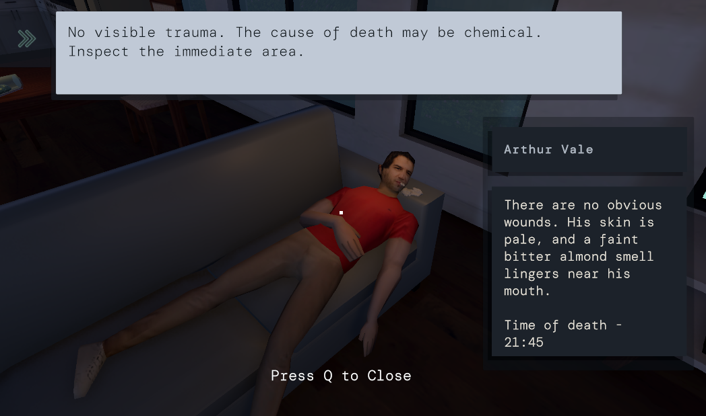

Reverse engineering a classic - a bartending frog, very thirsty weirdos, and my first real deep dive into 2D
Case Zero puts you right at the center of a murder mystery, and it's the player's responsibility to bring the truth to light. Interrogate suspects, gather clues, and draw your own conclusions about what happened. More importantly, Trust No One. This project came to be a collaborative effort between another gameplay engineer and myself for Brackey's Jam 2026. It was refreshing and incredibly interesting working with someone on a collaborative project because it really showed me how much quicker a project can take on a life as soon as someone else starts working with you on it.


The challenge The real challenge was filling the bar with customers and keeping it filled. That meant creating behavior states — thirsty, waiting, drinking, and drunk. Thirsty customers would come in and take a seat if one was available at any of the five bars. Waiting customers would advance toward the bartender, and the player had to serve them to hold them back. The trick was that once a customer inched forward, new thirsty customers would spot the empty seat and move in. Drunk customers sometimes wouldn't leave and would hog the beers sliding down the bar — which I suppose is a real life problem too, and not a bug.
Each behavior state didn't just affect the NPC — it affected the environment, which in turn dictated every other customer. On top of that, I hadn't worked with tilemapping or grid systems in 2D before.
My solution for the chair problem was to have each customer take their chair with them as they moved. An NPC can't sit in a chair if another NPC's butt is dragging it along. But this created a new problem — the chair was now halfway down the bar, meaning customers could reach the end much faster. So after a customer entered the drunk state, their chair would reset to its origin after the NPC was deleted. Once chairs reset and references cleared, we had a rotating cycle of new customers coming in to drink.
Each NPC's update functions drove their state through a clean set of booleans:
void Update() {
EndGame();
IsWaiting();
IsDrinking();
FinishedDrinking();
IsLeaving();
}
As for tilemapping — it clicked when I started thinking about 2D in 3D terms. Sorting layers just meant imagining which objects were closest to the camera and which were farthest. Working in 2D also gave me a much better grasp on memory optimization. Out of sight, out of my CPU.
What worked, and what I'd do differently.